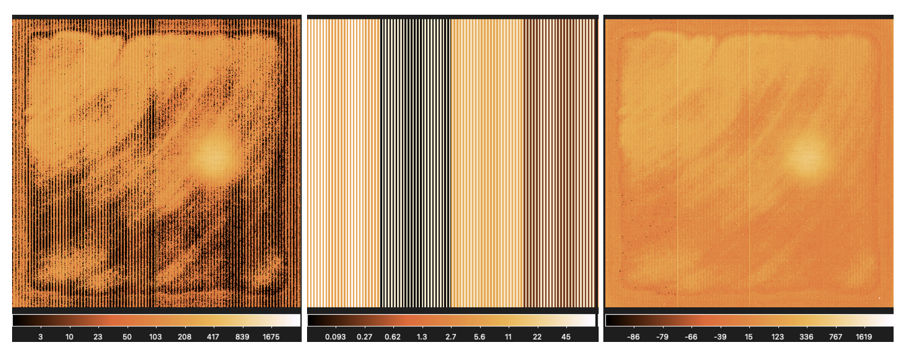
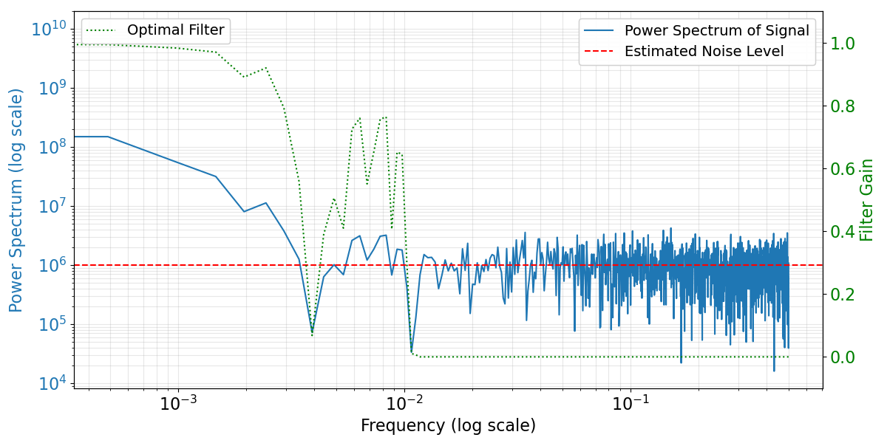
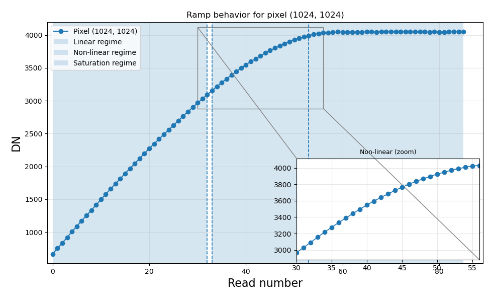
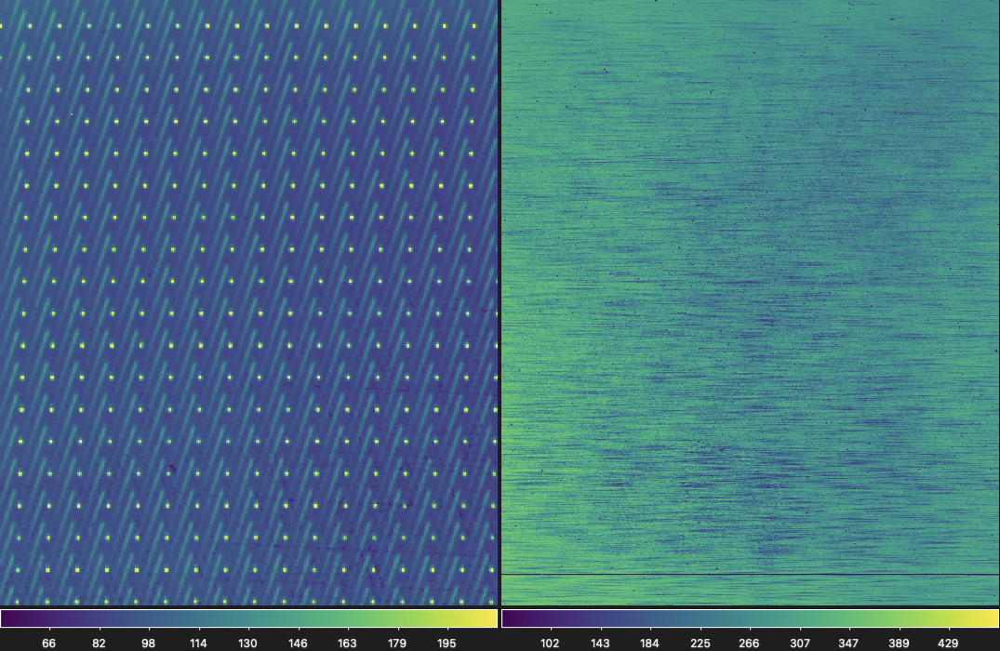
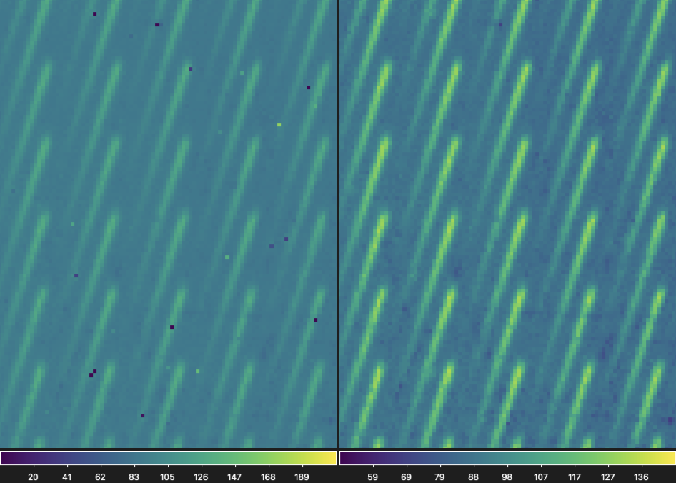
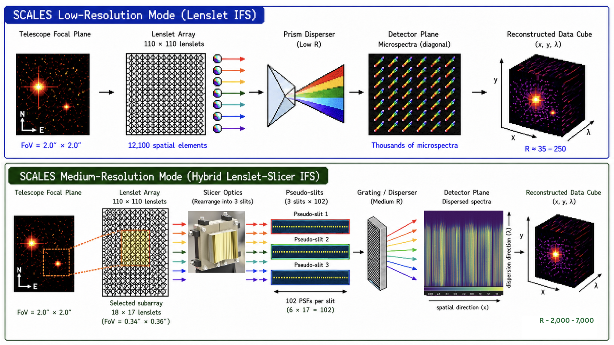
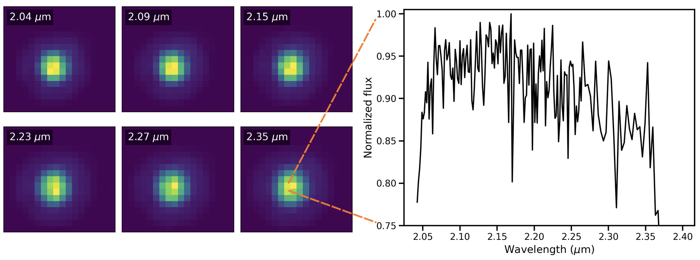

Primitives
This section provides a brief overview of the primitives used by the SCALES-DRP pipeline.
For Imaging mode, the final outputs are the ramp-fitted slope image, the corresponding uncertainty image, and the associated data quality (DQ) flags. For IFS mode, the final outputs are the ramp-fitted slope image and a three-dimensional data cube with two spatial axes and one spectral axis, together with the associated uncertainty and DQ flag maps. The following sections describe each processing step in the order in which it is executed by the pipeline.
The SCALES H2RG detectors use four readout channels and support both slow and fast readout modes. In fast mode, the detector electronics require an odd-even column swap, which is performed by the detector server immediately after each read is acquired. As a result, the raw input reads provided to the DRP have already undergone odd-even column swapping.
All the primitive files are exist in:
/SCALES-DRP/scalesdrp/primitives
Reference Pixel Correction
Matches all amplifier outputs to a common baseline level.
The primitive subtracts the average value of the top and bottom four reference rows for each amplifier and for every detector read. By default, it computes the sigma-clipped median of the reference pixels separately for the odd and even columns within each amplifier and subtracts the corresponding value from that amplifier channel. Alternatively, the averaging method can be changed to a sigma-clipped mean.
An option is also provided to disable the odd/even correction, in which case a single sigma-clipped average value is computed from all horizontal reference pixels within each amplifier. The correction is applied to the entire 2048 × 2048 detector frame, including both the science region and the top, bottom, left, and right reference pixels.
The related codes can be found here:
/SCALES-DRP/scalesdrp/Primitives/reference.py
{kind=link}

A raw read from the imaging detector illuminated by a source (left), the reference pixel correction estimated using the top and bottom reference pixels (middle) for odd and even columns seperately, and the same read after the reference pixel correction (right).
1/f Noise Correction
Estimates and subtracts the detector 1/f noise from each read.
This primitive performs a 1/f noise correction using the left and right four reference-pixel columns. It applies an optimal filtering algorithm to the vertical reference pixels to estimate and remove the low-frequency correlated noise responsible for horizontal striping in the detector image.
For each read, the sigma-clipped average of the reference pixels is computed across all rows and subtracted to remove the global offset. The residual reference-pixel values are then combined into a one-dimensional reference profile of size (1, 2048), which is smoothed using a Fast Fourier Transform (FFT)-based filter. The resulting 1/f noise model is subtracted from the entire detector frame, including both the science region and the top, bottom, left, and right reference pixels. By default, the primitive uses a sigma-clipped mean to estimate the reference values, although a sigma-clipped median can also be selected.
The FFT smoothing algorithm is adapted from the method of Kosarev & Pantos and assumes that the reference-pixel data are uniformly sampled. The original implementation was developed by M. Robberto in IDL, while the majority of the Python implementation is adapted from Jarron Leisenring.
The related codes can be found here:
/SCALES-DRP/scalesdrp/Primitives/reference.py
{kind=link}

Frequency-domain representation of the FFT-based optimal filter used for 1/f noise correction for an imager detector flat read. The blue curve shows the power spectrum of the averaged side reference pixel signal after amplifier offset correction, while the red dashed line marks the estimated white-noise floor derived from the high-frequency region. The green dotted curve shows the optimal filter transfer function, which preserves low-frequency correlated detector drift while suppressing high-frequency white noise. The filtered signal is transformed back to the spatial domain and subtracted from the detector image to remove horizontal 1/f striping.
Linearity Correction
Applies a per-pixel non-linearity correction using precomputed calibration coefficients.
This primitive applies a two-segment polynomial correction to each detector pixel using the calibration products generated by Linearity Coefficient Generation. The correction converts the measured detector signal (DN) into an estimate of the corresponding linearized signal while preserving the original ramp shape. During this step, a data quality (DQ) map is also created and propagated through the remaining stages of the data reduction pipeline.
The calibration reference file contains the per-pixel arrays COEFFS1, COEFFS2, CUTOFF_M, SAT_INDEX, and, when available, GOODPIX and BPM_INPUT. These products determine where the correction is valid, which polynomial segment should be applied, and which reads should be excluded after saturation.
Behaviour
CUTOFF_Mdefines the measured DN threshold used to select between the low- and high-signal polynomial corrections.Pixels are considered invalid for linearity correction if they are masked by the optional input bad pixel mask, the calibration
BPM_INPUTmask, or (when enabled)GOODPIX.Pixels without a valid low-signal calibration (
COEFFS1contains only NaN values orCUTOFF_Mis NaN):are flagged with
DQ_FLAGS["NO_LIN_CORR"];are left uncorrected (identity transformation,
y = x).
Pixels with a valid low-signal calibration but an invalid high-signal calibration (
COEFFS2contains only NaN values or otherwise fails the validity checks):are not assigned the
NO_LIN_CORRflag;use the low-signal polynomial (
COEFFS1) over the entire usable signal range.
The per-pixel
SAT_INDEXdefines the first read considered saturated. Only reads beforeSAT_INDEXare corrected. If no valid saturation index is available, the full ramp is treated as usable.Reads at and beyond
SAT_INDEXare not evaluated with the polynomial correction. Their values are handled according to the selectedinvalid_read_behavior:flat_last_valid(default): replace all post-saturation reads with the last valid corrected value;raw: preserve the original measured values;nan: replace post-saturation reads withNaN.
The primitive returns a corrected ramp with the same dimensions as the input. When requested, it also returns a DQ map containing
NO_LIN_CORRflags and a mask identifying pixels for which the polynomial correction was successfully applied.
The related codes can be found here:
/SCALES-DRP/scalesdrp/Primitives/linearity.py
{kind=link}

linear demo caption
Ramp Fitting
Fits a count rate to each detector pixel using nondestructive ramp reads.
The SCALES DRP adopts the fitramp algorithm developed by
Brandt et al. (2024)
to estimate the count rate from nondestructive detector ramps. The algorithm performs an optimal generalized least-squares (GLS) fit that accounts for both read noise and photon noise, including their covariance, providing statistically optimal estimates of the pixel count rate.
The covariance matrix is constructed from the differences between consecutive reads while propagating the contributions from read noise, photon noise, and their correlations. The inverse covariance matrix is then used as the weighting matrix for the GLS fit. Per-pixel read noise is estimated from the master bias frames.
Cosmic-ray jumps are detected iteratively by evaluating the goodness of fit at each possible jump location. Additional details of the algorithm are described in Brandt et al. (2024a) and Brandt et al. (2024b).
The saturation information propagated through the detector DQ flags is used to exclude saturated reads from the fit.
Behaviour
Fits the count rate for each detector pixel using all valid nondestructive reads.
Uses the per-pixel read noise estimated from the master bias calibration.
Excludes saturated reads using the detector DQ flags.
Iteratively detects and masks jump events (e.g., cosmic rays) during the fitting process.
Automatically falls back to a robust ordinary least-squares (OLS) fit when the generalized least-squares solution cannot be computed for a pixel.
Masks physically impossible read pairs before performing the fit.
Applies detector calibrations (bad pixel correction, bias or dark subtraction, and detector flat-field correction) as required for the input data type before fitting the ramp.
Output
The primitive produces:
A slope (count-rate) image.
An associated uncertainty image.
Associated data quality flags.
These products are written as FITS extensions and represent the final detector-level outputs for imaging-mode observations after all detector calibrations have been applied.
{kind=link}

Example ramp-fitted slope images showing a monochromatic calibration exposure (left) and an imager detector flat exposure (right) after detector-level processing and ramp fitting.
The related codes can be found here:
/SCALES-DRP/scalesdrp/Primitives/rampfit.py
/SCALES-DRP/scalesdrp/Primitives/scales_basic.py
Bad Pixel Correction
Corrects detector bad pixels using a precomputed sparse interpolation matrix.
This primitive corrects pixels flagged in the master bad pixel mask generated by Creating Master Bad Pixel Mask. Rather than interpolating each bad pixel individually for every exposure, the pipeline applies a precomputed sparse correction matrix that reconstructs bad pixels from neighboring valid pixels using inverse-distance weighted interpolation.
The sparse correction matrix is generated once for a given bad pixel mask and detector geometry (see Creating Master Bad Pixel Mask) and can be reused for all subsequent exposures. This significantly reduces the computational cost of bad pixel correction during routine data reduction.
Behaviour
Pixels not flagged as bad remain unchanged.
Each bad pixel is reconstructed from nearby valid pixels using normalized inverse-distance interpolation weights.
The correction is performed through a single sparse matrix multiplication, allowing the entire detector image to be corrected efficiently.
The master bad pixel mask is applied in all pipeline modes, including:
Science-grade reduction;
Calibration processing;
Quicklook reduction.
When dynamic bad pixel detection is enabled, a new sparse correction matrix is generated from the updated bad pixel mask and applied using the same interpolation framework.
Dynamic bad pixel correction is performed only in the science-grade and calibration pipelines. The quicklook pipeline applies only the master bad pixel mask to maximize processing speed.
Output
Returns a detector image with bad pixels replaced by interpolated values while preserving all unaffected pixels.
Pixels that are not flagged in the bad pixel mask retain their original values.
{kind=link}

bad pixel mask for imaging detector (left), and the IFS detector (right).
The related codes can be found here:
/SCALES-DRP/scalesdrp/Primitives/bpm_correction.py
Applying Master Calibration Files
Master bias, dark, and flat calibration files generated during the afternoon calibration process are automatically applied to the science data as appropriate. If matching calibration files are unavailable, the pipeline falls back to a default set of master calibration files supplied with the pipeline.
The selection of master calibration files is based on the relevant detector and observing configuration (e.g., detector, clocking mode, exposure time, or observing mode, depending on the calibration type).
Additional details on the generation and selection of master calibration products are provided in Calibration products.
The related codes can be found here:
/SCALES-DRP/scalesdrp/Primitives/scales_basic.py
Spectral Extraction
Extracts calibrated detector images into three-dimensional IFS data cubes.
After detector-level calibrations have been applied, the pipeline reconstructs the two-dimensional detector image into a three-dimensional integral field spectroscopy (IFS) data cube. The extracted cube contains two spatial dimensions corresponding to the lenslet array and one spectral dimension corresponding to wavelength.
{kind=link}

Illustration of the lenslet and slicer IFS formats, along with the hybrid lenslet-slicer (or “slenslit”) concept used for the SCALES medium-resolution IFS. The lenslet IFS is used by most exoplanet- imaging IFSs because it samples the field before the downstream spectrograph imparts optical aberrations. The slicer IFS has the benefit of creating longer spectra, but imparts optical aberrations. The slenslit IFS combines the benefits of the lenslet IFS and the slicer IFS.
The SCALES DRP provides two complementary extraction methods:
Optimal Extraction — a fast, variance-weighted extraction based on the optimal extraction algorithm of Horne (1986).
χ² Extraction — a forward-modeling χ² extraction that simultaneously fits the entire detector image using the instrument rectification matrix.
Both methods produce:
a flux cube;
an associated uncertainty cube.
The dimensions of the output cube are determined by the observing mode, including the number of spatial lenslets and wavelength bins.
Optimal Extraction
This routine extracts spectra using variance-weighted optimal extraction.
The pipeline implements the optimal extraction algorithm described by Horne (1986).
Each wavelength channel is extracted by weighting detector pixels according to the measured monochromatic calibration PSF (psflet) and the corresponding pixel variances. The extraction weights are stored in a rectification matrix generated during the calibration process (see Calibration module).
Behaviour
Uses the monochromatic calibration PSFs to determine extraction weights.
Computes pixel variances from photon noise and detector read noise.
Performs a variance-weighted linear extraction independently for each wavelength.
Propagates uncertainties through the extraction to generate an uncertainty cube.
Output
Returns:
a three-dimensional flux cube;
a corresponding uncertainty cube.
χ² Extraction
Extracts spectra by fitting a forward model to the complete detector image.
The χ² extraction treats spectral extraction as a linear inverse problem. Instead of extracting each spectrum independently, the method simultaneously fits the complete detector image using the instrument rectification matrix generated during calibration (see Calibration module).
The detector image is modeled as
R × A = d
where:
Ris the rectification matrix;Ais the unknown spectral flux vector;dis the observed detector image.
The optimal solution is obtained by minimizing the variance-weighted χ² between the forward model and the detector data. Pixel weights are determined from the detector read noise and signal-dependent photon noise.
Behaviour
Simultaneously fits all spectra across the detector.
Uses the calibrated rectification matrix as the forward model.
Performs a bounded weighted non-negative least-squares (BWNNLS) optimization.
Enforces non-negative flux values.
Uses an upper flux bound derived from the optimal extraction solution to improve robustness.
Solves the optimization using
scipy.optimize.lsq_linearwith the trust-region reflective algorithm.
Output
Returns:
a three-dimensional flux cube;
a corresponding uncertainty cube.
The related codes can be found here:
/SCALES-DRP/scalesdrp/Primitives/SpectralExtract.py
/SCALES-DRP/scalesdrp/Primitives/scales_basic.py
{kind=link}

The medium resolution K-band IFS cube slice at different wavelengths from 2.0-2.4 μm and a one dimensional extracted spectra at a slenslit position (7,8) using Optimal Extraction.
World Coordinate System (WCS)
Constructs a three-dimensional World Coordinate System (WCS) for an IFS data cube.
This primitive creates an astropy.wcs.WCS object that defines the spatial and spectral coordinate system of an extracted integral field spectroscopy (IFS) data cube. The resulting WCS maps the two spatial axes to right ascension and declination using a tangent-plane (TAN) projection and the third axis to wavelength.
The WCS is constructed from the FITS header together with a detector-specific reference pixel map. The routine is designed to accommodate variations in FITS header conventions by automatically interpreting sky coordinates provided in different formats, handling optional keywords, and applying sensible defaults when required.
Behaviour
Reads the reference sky coordinates (RA and Dec) from the FITS header.
Determines the wavelength solution from the observing mode and filter configuration.
Applies the detector pixel scale and position angle to define the spatial coordinate system.
Uses a filter-dependent detector reference pixel when available, otherwise falls back to a default reference pixel.
Handles missing or optional FITS header keywords by applying appropriate default values where possible.
Constructs a three-dimensional
astropy.wcs.WCSobject suitable for coordinate transformations between detector pixels and world coordinates.
Output
Returns a fully populated astropy.wcs.WCS object describing the spatial and spectral coordinate system of the IFS data cube.
The related codes can be found here:
/SCALES-DRP/scalesdrp/Primitives/SpectralExtract.py
/SCALES-DRP/scalesdrp/Primitives/scales_basic.py